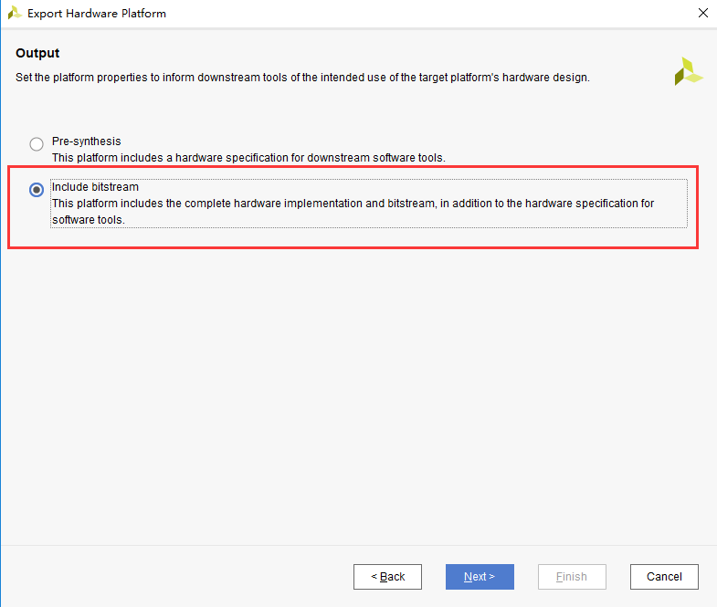
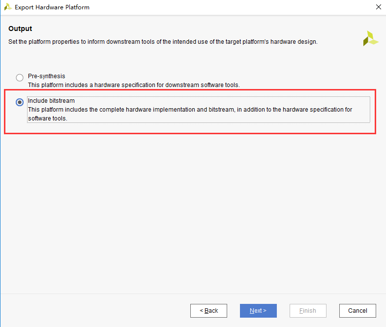

使用VDMA驱动HDMI显示¶
实验VIvado工程为“vdma_hdmi_out”。
PS没有集成显示控制系统，需要借助PL来实现，实现的方案有很多，但是都离不开DMA系统，DMA系统可以完成显示数据从ddr3读出到显示器的显示，降低CPU的开销，VDMA是xilinx开发的特殊DMA，专门用于视频输入输出，是学习xilinx FPGA视频处理的重要内容。
前面的HDMI显示数据是PL内部产生的，这个实验中显示数据是PS生成的，然后PL通过VDMA送给HDMI接口。
Vivado工程建立¶
由于VDMA显示是一个非常重要的内容，本实验会详细介绍Vivado的搭建过程。
新建一个名为“vdma_hdmi_out”工程。
{kind=link}
创建一个Block设计

设计名称保持默认不变
{kind=link}
添加ZYNQ处理器

配置ZYNQ参数，使能HP0接口，用于VDMA快速读取ddr。

配置Bnak电平标准，Bank0为LVCMOS 3.3V，Bank1 为 LVCMOS 1.8V，使能串口

使能I2C0，并且选择EMIO，这样可以把I2C连接到PL端。

配置时钟，FCLK_CLK0配置为100Mhz，FCLK_CLK1配置为142Mhz，这个时钟用于VDMA读取数据。

配置ddr3，选择MT41256M16 RE-125
{kind=link}
配置中断，使能IRQ_F2P，接收PL端的中断

添加VDMA IP

按照下图配置VDMA基本参数

配置VDMA高级参数

添加视频时序控制器

配置视频时序控制器参数

添加AXI流转视频输出控制器

配置AXI流转视频输出控制器参数

由于视频有很多分辨率，各种分辨的时钟频率不相同，需要使用一个动态时钟控制器，这个IP来自开源软件，找到例程里的repo目录，复制到自己的目录下

添加IP仓库

添加完成以后可以看到很多IP
{kind=link}
添加动态时钟控制器

连接Vivado可能无法自动连接的时钟信号
{kind=link}
连接其他一些关键信号

连接中断信号，需要先添加一个Concat IP，用于信号连接


使用Vivado自动连接功能，完成剩下的线连接

选择所有模块自动连接

运行“Run Block Automation”完成一些必要的端口导出

展开vid_io_out端口

选择我们需要的端口导出

导出IIC_0端口
{kind=link}
导出视频时钟端口

名称修改为hdmi_out_clk

修改其他端口的名称

保存设计后按F6 检查设计，没有问题后创建HDL文件

添加HDMI输出的xdc文件，约束管脚
{kind=link}
xdc文件内容如下
set_property BITSTREAM.GENERAL.COMPRESS TRUE [current_design] set_property CONFIG_VOLTAGE 3.3 [current_design] set_property CFGBVS VCCO [current_design] set_property BITSTREAM.CONFIG.UNUSEDPIN PULLUP [current_design] set_property PACKAGE_PIN K13 [get_ports hdmi_out_clk] set_property PACKAGE_PIN G16 [get_ports {hdmi_out_data[0]}] set_property PACKAGE_PIN E16 [get_ports {hdmi_out_data[1]}] set_property PACKAGE_PIN J15 [get_ports {hdmi_out_data[2]}] set_property PACKAGE_PIN E15 [get_ports {hdmi_out_data[3]}] set_property PACKAGE_PIN F15 [get_ports {hdmi_out_data[4]}] set_property PACKAGE_PIN G15 [get_ports {hdmi_out_data[5]}] set_property PACKAGE_PIN F14 [get_ports {hdmi_out_data[6]}] set_property PACKAGE_PIN H14 [get_ports {hdmi_out_data[7]}] set_property PACKAGE_PIN J13 [get_ports {hdmi_out_data[8]}] set_property PACKAGE_PIN K12 [get_ports {hdmi_out_data[9]}] set_property PACKAGE_PIN B11 [get_ports {hdmi_out_data[10]}] set_property PACKAGE_PIN C12 [get_ports {hdmi_out_data[11]}] set_property PACKAGE_PIN D13 [get_ports {hdmi_out_data[12]}] set_property PACKAGE_PIN A12 [get_ports {hdmi_out_data[13]}] set_property PACKAGE_PIN C13 [get_ports {hdmi_out_data[14]}] set_property PACKAGE_PIN A13 [get_ports {hdmi_out_data[15]}] set_property PACKAGE_PIN D14 [get_ports {hdmi_out_data[16]}] set_property PACKAGE_PIN D15 [get_ports {hdmi_out_data[17]}] set_property PACKAGE_PIN A14 [get_ports {hdmi_out_data[18]}] set_property PACKAGE_PIN B14 [get_ports {hdmi_out_data[19]}] set_property PACKAGE_PIN A15 [get_ports {hdmi_out_data[20]}] set_property PACKAGE_PIN B15 [get_ports {hdmi_out_data[21]}] set_property PACKAGE_PIN D16 [get_ports {hdmi_out_data[22]}] set_property PACKAGE_PIN B16 [get_ports {hdmi_out_data[23]}] set_property PACKAGE_PIN K15 [get_ports hdmi_out_de] set_property PACKAGE_PIN C11 [get_ports hdmi_out_hs] set_property PACKAGE_PIN B12 [get_ports hdmi_out_vs] set_property PACKAGE_PIN A17 [get_ports hdmi_i2c_scl_io] set_property PACKAGE_PIN C16 [get_ports hdmi_i2c_sda_io] set_property IOSTANDARD LVCMOS18 [get_ports hdmi_i2c_scl_io] set_property IOSTANDARD LVCMOS18 [get_ports hdmi_i2c_sda_io] set_property IOSTANDARD LVCMOS18 [get_ports hdmi_out_clk] set_property IOSTANDARD LVCMOS18 [get_ports hdmi_out_de] set_property IOSTANDARD LVCMOS18 [get_ports hdmi_out_hs] set_property IOSTANDARD LVCMOS18 [get_ports {hdmi_out_data[*]}] set_property IOSTANDARD LVCMOS18 [get_ports hdmi_out_vs] set_property SLEW FAST [get_ports {hdmi_out_data[*]}] set_property DRIVE 8 [get_ports {hdmi_out_data[*]}] set_property SLEW FAST [get_ports hdmi_out_clk] set_property SLEW FAST [get_ports hdmi_out_de] set_property SLEW FAST [get_ports hdmi_out_hs] set_property SLEW FAST [get_ports hdmi_out_vs] |
编译生成bit文件
Vitis软件编写调试¶
导出硬件
 

{kind=link}
运行Vitis，新建一个名为vdma_hdmi的APP，已经预备了相关程序

由于程序文件较多，不再具体介绍，直接复制例程的源代码。删除src目录下的文件，使用例程的src目录文件代替

在Vitis下按F5刷新
在display_ctrl文件夹中，diplay_ctrl.c主要是显示的控制，vga_mode.h中加入了一些显示分辨率的时序参数。

在display_ctrl.c中，可以修改displayPtr->vMode，改变显示的分辨率。

Dynclk文件中，主要功能是根据不同的分辨率配置锁相环的时钟输出，产生像素时钟。
{kind=link}
连接HDMI输出端口到显示器，编译运行

显示器显示出一幅图片

ZYNQ-7000开发平台 FPGA教程 - Alinx官方网站